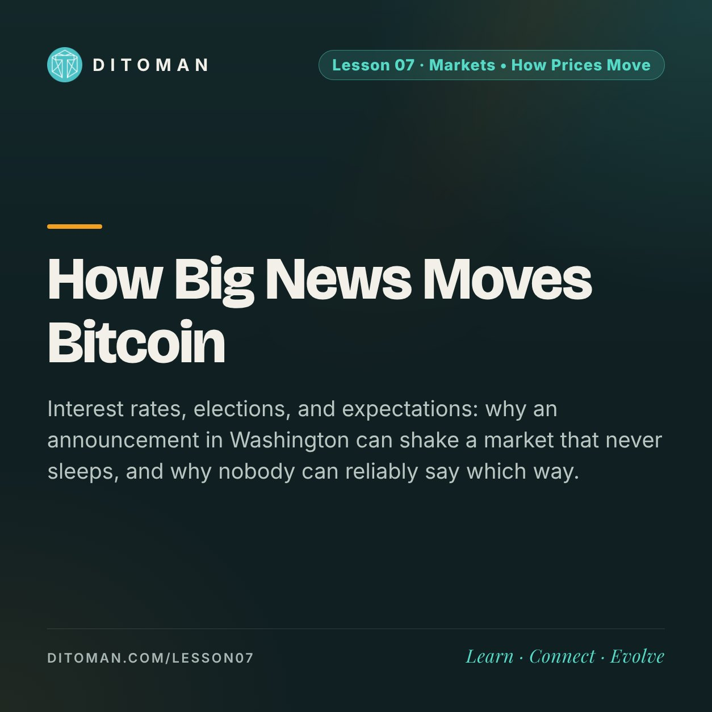

Cómo mueven a Bitcoin las grandes noticias
خبرهای بزرگ چطور قیمت بیتکوین را تکان میدهند
Tipos de interés, elecciones y expectativas: por qué un anuncio en Washington puede sacudir un mercado que nunca duerme, y por qué nadie puede decir con seguridad en qué dirección.
نرخ بهره، انتخابات و انتظارات: چرا یک اعلام رسمی در واشنگتن میتواند بازاری را که هیچوقت نمیخوابد تکان دهد، و چرا هیچکس نمیتواند با اطمینان بگوید به کدام سمت.
Contenido de la lección
محتوای درس
Lee la lección en inglés o persa. Esta estructura está pensada para futuros sistemas de cuestionarios, puntuación, reputación y recompensas.
درس را به فارسی یا انگلیسی بخوانید. این ساختار برای آزمونک، امتیاز، اعتبار و پاداشهایی طراحی شده که در آینده اضافه میشوند.
De vez en cuando todo el mercado parece contener la respiración antes de un anuncio programado. Los dos mayores ejemplos son las decisiones sobre tipos de interés y las elecciones.
Por ejemplo, la Reserva Federal de EE. UU. anuncia su decisión de tipos el miércoles 28 de octubre de 2026, y las elecciones de mitad de mandato son el 3 de noviembre de 2026. Esta lección no trata de esas fechas. Explica los mecanismos que hay detrás, para que puedas leer cualquier semana parecida con la cabeza fría.
También explica algo igual de importante: por qué nada de esto te dice lo que pasará después.
01. El tipo de interés es el precio del dinero
Un banco central fija el coste básico de pedir prestado en su moneda. Cuando ese coste es alto, los préstamos son caros y ahorrar compensa. Cuando es bajo, los préstamos son baratos y ahorrar rinde poco.
Ese único número moldea en silencio lo que todos hacen con su dinero: si una empresa pide prestado para crecer, si una persona compra una casa, si un inversor prefiere seguridad o riesgo.
02. Tres caminos de los tipos de interés a Bitcoin
El camino de las alternativas. Cuando los activos seguros, como los bonos del Estado o los ahorros, pagan más, los activos de riesgo parecen menos atractivos en comparación. El dinero puede ir hacia la seguridad. Cuando los activos seguros pagan menos, el dinero busca rentabilidad en otra parte.
El camino del préstamo. Muchos operadores usan dinero prestado para comprar activos de riesgo. Unos tipos más altos encarecen ese crédito y reducen el dinero que entra en los mercados. Unos tipos más bajos hacen lo contrario.
El camino de la divisa. Los cambios de tipos pueden fortalecer o debilitar el dólar estadounidense, y la mayoría de las cripto cotizan en dólares. Un dólar más fuerte puede pesar sobre los precios medidos en dólares. Este efecto es real, pero poco fiable.
Fíjate en las palabras «puede» y «podría». Son presiones, no reglas.
03. Las expectativas importan más que la decisión
Los mercados no esperan al anuncio. Lo adivinan antes, y los precios se mueven con la apuesta. Cuando llega la decisión, el resultado esperado ya está «descontado».
Lo que mueve un mercado es la sorpresa: la distancia entre lo esperado y lo que realmente pasó. Una bajada de tipos que todos esperaban puede cambiar muy poco. Un mantenimiento que nadie esperaba puede mover mucho.
Las palabras también importan. El comunicado y la rueda de prensa posteriores pueden cambiar las expectativas sobre la siguiente reunión, y a menudo es a eso a lo que más reaccionan los operadores.
04. Por qué importan las elecciones
Las elecciones deciden quién escribe y aprueba las reglas. En Estados Unidos, el Congreso aprueba las leyes sobre impuestos, gasto y cómo se regulan los productos financieros, incluidas las cripto.
Las elecciones de medio mandato se celebran a mitad del mandato presidencial. Se disputan los 435 escaños de la Cámara de Representantes y alrededor de un tercio del Senado, así que el resultado puede cambiar lo que es políticamente posible en los dos años siguientes.
Hay dos efectos. Uno es el cambio de política en sí, que suele tardar meses o años. El otro es la incertidumbre antes de la votación, que a los mercados a menudo no les gusta y que puede desvanecerse rápido una vez conocido el resultado.
05. Por qué las cripto reaccionan primero y con más fuerza
Las bolsas cierran de noche y los fines de semana. Bitcoin cotiza a todas horas, todos los días, en todos los países. Cuando llega una noticia fuera del horario de mercado, las cripto suelen ser el primer lugar donde aparece la reacción.
El apalancamiento lo hace más brusco. Cuando un precio cae, quienes operan con dinero prestado pueden verse obligados a vender automáticamente, y esas ventas forzosas hunden aún más el precio. Los movimientos rápidos son a menudo en parte mecánicos, no solo un veredicto sobre la noticia.
06. Lo que la historia puede y no puede decirte
Verás afirmaciones como «Bitcoin siempre cae antes de las elecciones de medio mandato y sube después». Mira qué poco las respalda.
Bitcoin solo ha cotizado con volumen relevante en tres elecciones de mitad de mandato en EE. UU.: 2014, 2018 y 2022. Tres observaciones no son un patrón. En esos años pasaban además otras cosas, como cambios en los tipos de interés y el propio ciclo de oferta de Bitcoin, así que es imposible decir qué causó qué.
La relación entre Bitcoin y los tipos de interés también cambia con el tiempo. A veces es fuerte. A veces desaparece. Quien te dé una predicción segura está vendiendo una certeza que no existe.
Qué hacer con todo esto
Conoce la fecha, para que un gran anuncio no te pille por sorpresa. Pregunta qué se espera ya, porque eso es lo que el precio ya contiene. Ten el máximo cuidado con el dinero prestado en torno a grandes acontecimientos. Y dimensiona cualquier posición según lo que puedas permitirte perder, como en la lección anterior.
Sobre todo, no operes con el titular. Entiende el sistema en el que se inscribe el titular.
گاهی کل بازار پیش از یک اعلام برنامهریزیشده نفسش را حبس میکند. دو نمونهی بزرگ آن تصمیم نرخ بهره و انتخابات است.
برای نمونه، فدرال رزرو آمریکا تصمیم نرخ بهره را چهارشنبه ۲۸ اکتبر ۲۰۲۶ اعلام میکند و انتخابات میاندورهای آمریکا ۳ نوامبر ۲۰۲۶ برگزار میشود. این درس دربارهی همین تاریخها نیست. سازوکار پشت آنها را توضیح میدهد تا هر هفتهی مشابهی را با ذهن روشن بخوانید.
و چیزی به همان اندازه مهم را هم میگوید: چرا هیچکدام از اینها به شما نمیگوید بعد چه میشود.
۰۱. نرخ بهره قیمت پول است
بانک مرکزی هزینهی پایهی قرض گرفتن را برای پول خودش تعیین میکند. وقتی این هزینه بالاست، وام گران و پسانداز سودآور است. وقتی پایین است، وام ارزان و سود پسانداز کم است.
همین یک عدد بیصدا شکل میدهد که همه با پولشان چه میکنند: آیا کسبوکاری برای رشد قرض میگیرد، آیا کسی خانه میخرد، آیا سرمایهگذار امنیت را ترجیح میدهد یا ریسک را.
۰۲. سه راه از نرخ بهره تا بیتکوین
راه جایگزینها. وقتی داراییهای امن مثل اوراق قرضهی دولتی یا سپرده سود بیشتری میدهند، داراییهای پرریسک در مقایسه کمجذابتر میشوند و پول میتواند به سمت امنیت برود. وقتی سود دارایی امن کم میشود، پول در جای دیگری دنبال بازده میگردد.
راه قرض گرفتن. بسیاری از معاملهگران با پول قرضی دارایی پرریسک میخرند. نرخ بهرهی بالاتر این قرض را گرانتر میکند و پول ورودی به بازار را کم میکند. نرخ پایینتر عکس آن را میکند.
راه ارز. تغییر نرخ بهره میتواند دلار آمریکا را قویتر یا ضعیفتر کند و بیشتر ارزهای دیجیتال با دلار قیمتگذاری میشوند. دلار قوی میتواند روی قیمتهای دلاری فشار بیاورد. این اثر واقعی است، اما قابل اتکا نیست.
به واژههای «میتواند» و «ممکن است» توجه کنید. اینها فشار هستند، نه قانون.
۰۳. انتظارات از خود تصمیم مهمترند
بازارها منتظر اعلام نمیمانند. از پیش حدس میزنند و قیمتها بر پایهی همان حدس حرکت میکنند. تا تصمیم برسد، نتیجهی مورد انتظار قبلاً در قیمت «لحاظ شده» است.
آنچه بازار را تکان میدهد غافلگیری است: فاصلهی بین آنچه انتظار میرفت و آنچه واقعاً رخ داد. کاهش نرخی که همه انتظارش را داشتند شاید تقریباً هیچ تغییری نسازد. تثبیتی که کسی انتظارش را نداشت میتواند خیلی تکان بدهد.
کلمات هم اهمیت دارند. بیانیه و نشست خبری بعد از آن میتواند انتظارات دربارهی جلسهی بعدی را عوض کند، و معاملهگران اغلب بیشتر به همین واکنش نشان میدهند.
۰۴. چرا انتخابات مهم است
انتخابات تعیین میکند چه کسی قوانین را مینویسد و تصویب میکند. در آمریکا، کنگره قوانین مالیات، هزینهها و نحوهی نظارت بر محصولات مالی، از جمله ارز دیجیتال، را تصویب میکند.
انتخابات میاندورهای در نیمهی دورهی ریاستجمهوری برگزار میشود. هر ۴۳۵ کرسی مجلس نمایندگان و حدود یکسوم مجلس سنا در رقابت است، پس نتیجه میتواند آنچه را در دو سال بعد از نظر سیاسی ممکن است تغییر دهد.
دو اثر وجود دارد. یکی تغییر واقعی سیاستهاست که معمولاً ماهها یا سالها طول میکشد. دیگری عدم قطعیت پیش از رأیگیری است که بازارها معمولاً دوستش ندارند و پس از مشخص شدن نتیجه ممکن است زود کم شود.
۰۵. چرا ارز دیجیتال زودتر و تندتر واکنش نشان میدهد
بازار سهام شبها و آخر هفتهها تعطیل است. بیتکوین هر ساعت از شبانهروز و در همهی کشورها معامله میشود. وقتی خبری خارج از ساعت بازار میرسد، ارز دیجیتال اغلب اولین جایی است که واکنش در آن دیده میشود.
اهرم این واکنش را تندتر میکند. وقتی قیمت میافتد، معاملهگرانی که با پول قرضی کار میکنند ممکن است مجبور به فروش خودکار شوند، و همین فروشهای اجباری قیمت را باز هم پایین میبرد. حرکتهای سریع اغلب تا حدی مکانیکی هستند، نه فقط قضاوت دربارهی خبر.
۰۶. تاریخ چه میتواند بگوید و چه نمیتواند
ادعاهایی میبینید مثل «بیتکوین همیشه پیش از انتخابات میاندورهای میافتد و بعدش بالا میرود». ببینید چقدر کم پشتشان است.
بیتکوین فقط در سه انتخابات میاندورهای آمریکا با حجم معنیدار معامله شده است: ۲۰۱۴، ۲۰۱۸ و ۲۰۲۲. سه مشاهده الگو نیست. در همان سالها چیزهای دیگری هم در جریان بود، از جمله تغییر نرخ بهره و چرخهی عرضهی خود بیتکوین، پس نمیشود گفت چه چیزی علت چه چیزی بود.
رابطهی بیتکوین با نرخ بهره هم در طول زمان تغییر میکند. گاهی قوی است و گاهی از بین میرود. هر کس پیشبینی قاطع به شما بدهد، یقینی میفروشد که وجود ندارد.
با همهی اینها چه کنیم
تاریخ را بدانید تا اعلامهای بزرگ غافلگیرتان نکنند. بپرسید چه چیزی از قبل انتظار میرود، چون قیمت همان را در خود دارد. در اطراف رویدادهای بزرگ بیشترین احتیاط را با پول قرضی داشته باشید. و اندازهی هر موقعیت را مثل درس قبل با آنچه توان از دست دادنش را دارید تعیین کنید.
مهمتر از همه، با تیتر معامله نکنید. سیستمی را که تیتر در آن قرار دارد بفهمید.
Qué significa esto para TMN
این درس برای TMN چه معنایی دارد
Esta lección trata de entender el mercado que te rodea, no de TMN.
این درس دربارهی فهمیدن بازارِ اطراف شماست، نه دربارهی TMN.
Ditoman no toma posición sobre elecciones, gobiernos ni políticas de ningún lado. Explicamos cómo funcionan los sistemas y te dejamos las opiniones a ti.
دیتومان دربارهی انتخابات، دولتها یا سیاستگذاری از هیچ طرفی موضع نمیگیرد. ما توضیح میدهیم سیستمها چطور کار میکنند و قضاوت را به خودتان میسپاریم.
Conceptos clave
مفاهیم کلیدی
- El tipo de interés como precio del dinero
- Activos seguros frente a activos de riesgo
- Apalancamiento y ventas forzosas
- Expectativas y «ya descontado en el precio»
- Sorpresa frente a anuncio
- Elecciones, Congreso y regulación
- Correlación frente a causalidad
- نرخ بهره بهعنوان قیمت پول
- داراییهای امن در برابر داراییهای پرریسک
- اهرم و فروش اجباری
- انتظارات و «از قبل در قیمت لحاظ شدن»
- غافلگیری در برابر اعلام مورد انتظار
- انتخابات، کنگره و مقررات
- همبستگی در برابر علیت
Objetivos de aprendizaje
اهداف یادگیری
- Explica con lenguaje sencillo qué es un tipo de interés.
- Describe tres formas en que los cambios de tipos pueden llegar a Bitcoin.
- Explica por qué una sorpresa importa más que la decisión en sí.
- Explica por qué las elecciones pueden importar a los mercados cripto.
- Reconocer por qué tres casos históricos no forman un patrón.
- با زبان ساده توضیح دهید نرخ بهره چیست.
- سه راهی را که تغییر نرخ بهره از آنها به بیتکوین میرسد شرح دهید.
- توضیح دهید چرا غافلگیری از خود تصمیم مهمتر است.
- توضیح دهید چرا انتخابات میتواند برای بازار کریپتو مهم باشد.
- بفهمید چرا سه نمونهی تاریخی یک الگو نمیسازند.
Banco de preguntas futuro
بانک پرسشهای آزمونک آینده
Estas preguntas están preparadas para el futuro sistema de cuestionarios y participación de Ditoman. Más adelante podrían sustentar puntuaciones de aprendizaje, capas de reputación y una posible elegibilidad para recompensas en TMN.
این پرسشها برای سامانهی آزمونک و مشارکت آیندهی دیتومان آماده شدهاند. ممکن است بعدها مبنای امتیاز یادگیری، لایههای اعتبار و احتمالاً شرایط دریافت پاداش TMN شوند.
Pregunta 1
پرسش ۱
¿Qué es un tipo de interés, en los términos más sencillos?
به سادهترین بیان، نرخ بهره چیست؟
A. Un impuesto sobre las cripto
الف. مالیاتی بر کریپتو
B. El precio de pedir dinero prestado
ب. قیمت قرض گرفتن پول
C. El precio de Bitcoin
ج. قیمت بیتکوین
D. Una comisión que se paga a los exchanges
د. کارمزدی که به صرافیها پرداخت میشود
Respuesta correcta: B
پاسخ درست: ب
Pregunta 2
پرسش ۲
¿Por qué unos tipos de interés más altos pueden presionar a activos de riesgo como Bitcoin?
چرا نرخ بهرهی بالاتر میتواند داراییهای پرریسک مثل بیتکوین را در شرایط سختتری قرار دهد؟
Respuesta correcta: los activos seguros rinden más, así que los arriesgados resultan menos atractivos, y pedir prestado para comprarlos sale más caro.
پاسخ درست: داراییهای امن سود بیشتری میدهند، پس داراییهای پرریسک جذابیت کمتری پیدا میکنند و قرض گرفتن برای خریدشان هم گرانتر میشود.
Pregunta 3
پرسش ۳
¿Qué significa que un resultado esté «descontado»?
وقتی میگویند نتیجهای «از قبل در قیمت لحاظ شده»، یعنی چه؟
A. La decisión se ha cancelado
الف. تصمیم لغو شده است
B. El mercado ya se movió por adelantado con el resultado esperado
ب. بازار از قبل بر اساس نتیجهی مورد انتظار حرکت کرده است
C. El precio ya no puede cambiar
ج. قیمت دیگر نمیتواند تغییر کند
D. Los exchanges han fijado un precio
د. صرافیها قیمت ثابتی تعیین کردهاند
Respuesta correcta: B
پاسخ درست: ب
Pregunta 4
پرسش ۴
Verdadero o falso: como Bitcoin cayó antes de tres elecciones de medio mandato pasadas, caerá antes de la próxima.
درست یا نادرست: چون بیتکوین پیش از سه انتخابات میاندورهای گذشته افت کرد، پیش از انتخابات بعدی هم افت میکند.
Respuesta correcta: Falso. Tres observaciones no son un patrón, y había muchos otros factores en juego.
پاسخ درست: نادرست. سه مشاهده یک الگو نیست و عوامل زیاد دیگری هم در کار بودهاند.
Pregunta 5
پرسش ۵
¿Por qué pueden moverse rápido los precios cripto ante grandes noticias, incluso en fin de semana?
چرا قیمت کریپتو حتی در آخر هفتهها میتواند با خبرهای بزرگ سریع حرکت کند؟
A. Porque cotiza las 24 horas, y el apalancamiento puede forzar ventas
الف. چون شبانهروزی معامله میشود و اهرم میتواند به فروش اجباری منجر شود
B. Porque la controlan los bancos centrales
ب. چون بانکهای مرکزی آن را کنترل میکنند
C. Porque las noticias solo afectan a las cripto
ج. چون خبرها فقط روی کریپتو اثر میگذارند
D. Porque los exchanges cierran entre semana
د. چون صرافیها در روزهای کاری تعطیلاند
Respuesta correcta: A
پاسخ درست: الف
Resumen en Instagram
خلاصه در اینستاگرام
Esta lección se presentó primero en el Instagram de Ditoman. La versión de Instagram ofrece un breve resumen visual, y esta página ofrece la versión completa.
خلاصهی تصویری این درس ابتدا در اینستاگرام دیتومان منتشر شد. نسخهی اینستاگرام یک معرفی کوتاه و تصویری است و این صفحه نسخهی کامل آموزشی آن است.